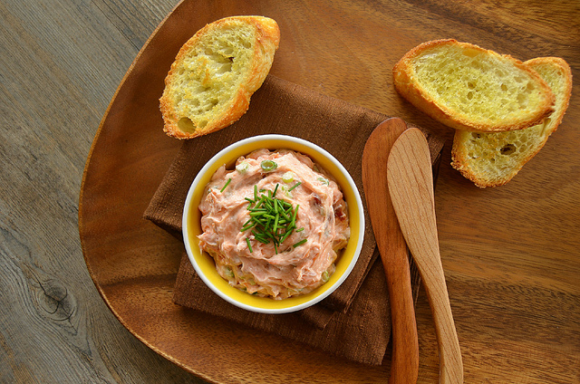

Smoked Salmon Dip
Recipe by Dawn Bovee

I got my image from onceuponachef.com
Ingredients
- 4 oz. boned smoked salmon
- 1/4 medium onion, very finely chopped (do not omit)
- 1/2 tsp. lemon juice
- 1/4 tsp. pepper
- 1 (8 oz.) pkg. cream cheese, softened
- 1/2 c. milk
- 1 tsp. green onion tops, thinly sliced
Directions
- Mix cream cheese and milk until smooth.
- Add remaining ingredients and stir until well blended.
- Scrape into an attractive bowl. Cover and refrigerate at least 2 hours or up to 2 days.
- Garnish the top with sliced green onion tops. Makes 2 cups.
Contact Me
katherine.holmgren@umontana.edu
University of Montana
32 Campus Drive
Missoula, MT 59801